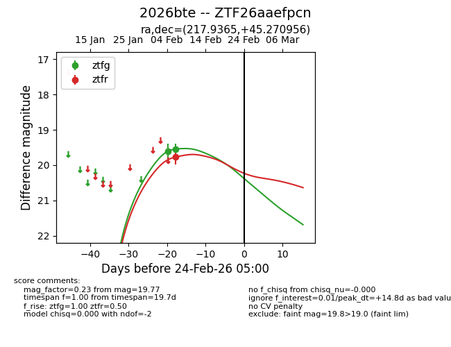
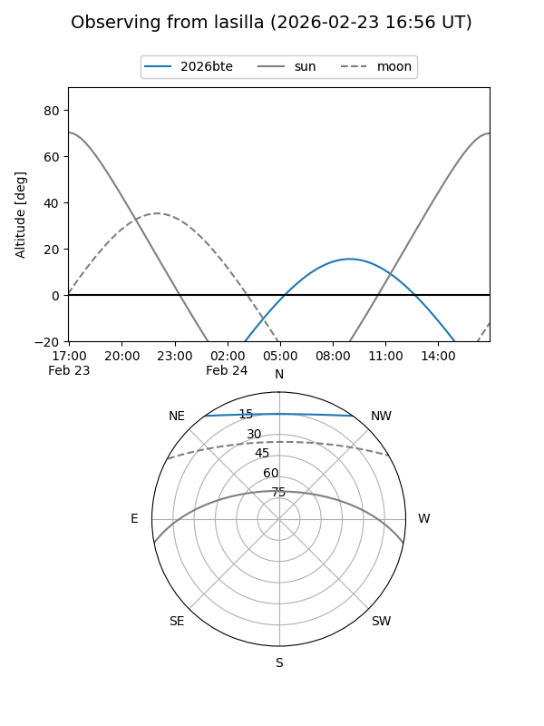
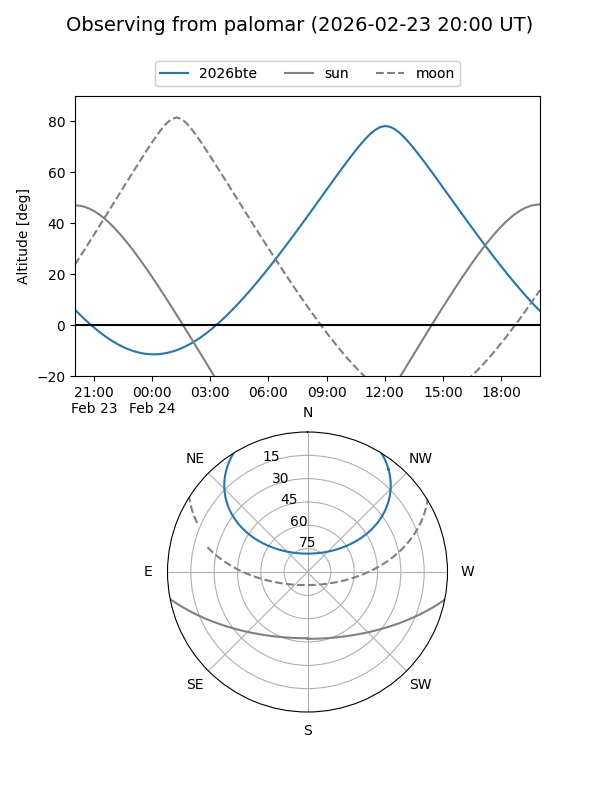

2026bte
Target 2026bte at 2026-02-24 09:08
Aliases and brokers:
FINK: link
Lasair: link
ALeRCE: link
TNS: link
YSE: link
alt names
ZTF26aaefpcn (ztf,fink_ztf)
2026bte (tns,yse)
Coordinates:
equatorial (ra, dec) = 217.9365,+45.27096
equatorial (HMS+DMS) = 14:31:44.77,+45:16:15.44
galactic (l, b) = (81.8080,+63.03010)
Flags:
Photometry:
last ztfg=19.54, ztfr=19.77
2 ztfg, 1 ztfr detections
Lightcurve

Visibility


Additional plots